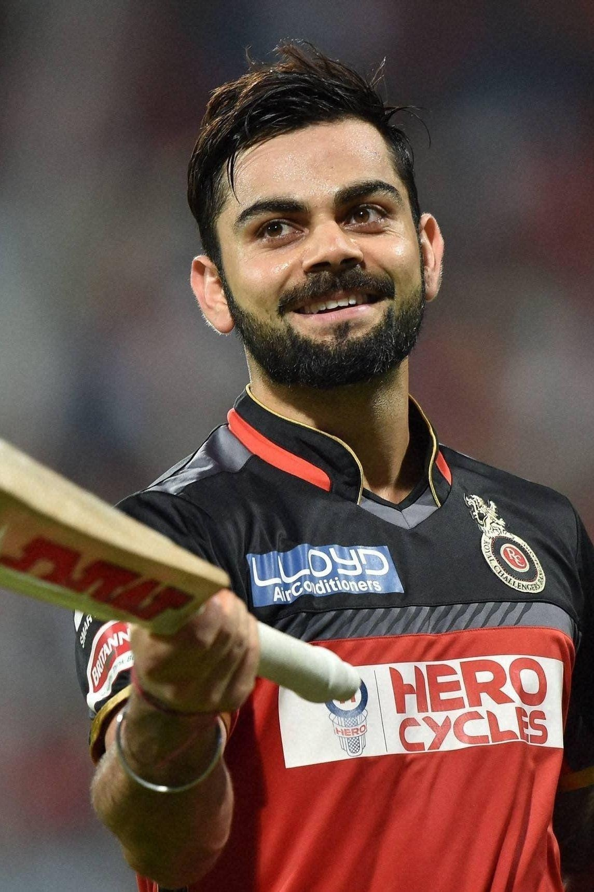

The Run Machine
"In run chases in the history of the game, there is Virat Kohli, there is daylight and then there are the rest"
* Virat Kohli (born November 5, 1988, Delhi, India) is an Indian international cricketer considered by many as one of the greatest batsmen in the history of the game.
* Kohli plays for (and previously captained) the Royal Challengers Bangalore (RCB) in the Indian Premier League (IPL).
* He is also a former captain of the Indian cricket team in all three international formats—Test cricket, one-day internationals (ODIs), and Twenty20 internationals (T20I)—making him one of India’s most successful captains.
* Kohli holds several cricket records, including the most individual hundreds in ODI matches and the most runs scored in a single edition of an ODI World Cup.
* He has been named Player of the Tournament at global events on three occasions: at the 2014 and 2016 T20I World Cups and the 2023 ODI World Cup.
* Kohli was also a member of the Indian sides that won the 2011 ODI World Cup and the 2013 ICC (International Cricket Council) Champions Trophy.
* He is married to popular Bollywood actress and producer Anushka Sharma.
* Fastest century by an Indian cricketer in ODIs (in 52 balls).
* Fastest Indian to reach 1,000 runs, 4,000 runs, 5,000 runs, 6,000 runs in ODIs.
* First Indian Captain to hit 3 double centuries in a calendar year.
* First Indian Test Captain to score a double hundred overseas.
* Fastest to 7000 ODI runs in the history of the game.
* First cricketer to score three centuries in his first 3 innings as India's Captain.
* First cricketer to hit 973 runs in a single edition of the Indian Premier League (IPL).
* Fastest in the world to reach 25 ODI centuries.
* Fastest in the world to reach 1,000 runs in T20Is.
* ICC ODI Player of the Year 2012.
* Won People's Choice Awards India for Favorite Sportsperson in 2012.
* Received Arjuna Award for Cricket in 2013
"Self belief and hardwork will always earn you success"